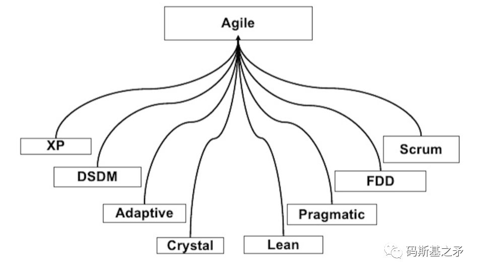
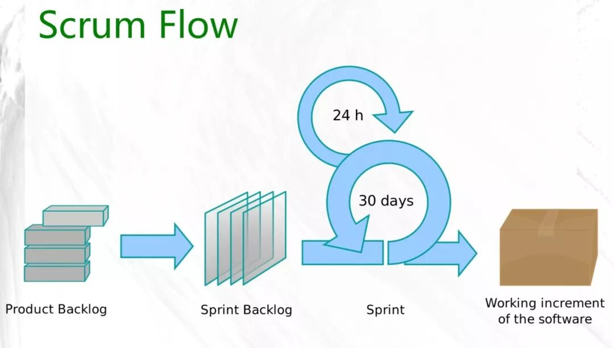

第5讲 Scrum，一个橄榄球术语为何颠覆性地改变了软件行业？
“ 敏捷的起源，与瀑布模式的差异，Scrum是什么，Scrum如何管理需求，Scrum中的角色分工，怎样度量软件项目的工作量，都将在本文得到解答。”
敏捷，源起
2001年在一个滑雪胜地，17个具有反叛精神的软件开发人员聚集在一起制定并签署了一份重要文件：关于编码集的独立宣言。这份文件标志着“敏捷宣言”的诞生，它列出了四个核心价值观：
个体和互动 胜过 流程和工具
工作的软件 胜过 详尽的文档
客户合作 胜过 合同谈判
响应变化 胜过 遵循计划
敏捷宣言
这份文件的结论是，“虽然右边的内容更有价值，但我们更看重左边的内容”。这些词句多年来有不同的解读，但基本要点是：
将人置于流程之上。专注于开发可以工作的软件，而不是软件的文档。和你的客户一起工作，而不是为一份合同而争吵。在此过程中，要对改变持开放态度。
CAROLINE MIMBS NYCE，“敏捷宣言”是如何诞生的？
后来，人们根据这套价值观，衍生出很多的方法论原则。基于这些方法论原则，又诞生了许多实践方法，它们被统称为敏捷(Agile)方法：

当然，在敏捷宣言正式诞生之前，一些敏捷方法已各自有雏形存在，在各领域已有不同程度的实践。敏捷宣言正式发布后，这些实践方法就都归入了敏捷的大旗之下。因为它们要面对和解决的都是同样的问题：
随着技术的迅速发展和经济的全球化，软件开发出现了新的特点，即在需求和技术不断变化的情况下实现快节奏的软件开发，这对生产率提出了很高的要求。
这些方法共同基于迭代增量式的开发思想，鼓励用户/客户参与到软件研发过程中来，并倡导持续反馈、持续集成、团队自组织、自驱动等理念。
其中最著名的当属Scrum和极限编程(XP，eXtreme Programming)，前者侧重管理实践，后者则偏于技术策略。而XP所包含的主要实践方法（如持续集成、测试驱动、重构、代码Review等等）已成为当代软件开发的标准技术实践而被广泛使用。
本文及后续章节，将重点论述Scrum敏捷方法及相关实战操作，并辅以少量XP实践。
瀑布与敏捷
软件开发是人类的一项工程行为，与建筑、造车等相比属于相对比较年轻的行业。在这门新兴工程的起步阶段，软件开发人员自然不免向建筑领域借鉴了很多东西。比如具体构建前先得进行详细、长久的计划与论证，漫长的需求分析和设计，绘制图纸和形成施工文档，再到具体施工建设，测试验收等等。
一栋楼若已盖了一部分，发现问题当然不可能推倒重来。所以每个阶段都必须严格遵循流程，确保安全性、可行性和正确无误。前一个阶段作为下一个阶段的输入，每一阶段都需要进行确定性的验收，才能进入下一阶段。
除非项目最终完工，否则较难看到真正需要的产物，人们没法在中间的各个阶段对最终的产物进行检验和验收（验收的只是中间产物，图纸、文档、标准、施工流程等）。
这种开发方式（或称开发模式），一般称为“瀑布式开发”，相应的项目管理流程也称为“瀑布项目过程”。
随着技术进步和社会发展，人们的生产生活需要的软件越来越多、规模越来越庞大。借助新兴的软件工具体系，软件开发这件事本身也变得越来越高生产率，程序的修改与技术架构调整变得“家常变饭”一样随性，一开始的设计到最终看到的成品可能已经完全两样的东西。
软件工程师或程序员喜欢在不同的步骤之间来回切换，它们并不是按照顺序来排的。在一个项目的最后阶段，要测试整个项目，就会有这么一个问题：如果你在最后一个阶段发现了一个Bug，那么尝试回去修复它可能会很混乱，甚至是致命的。一些软件项目会陷入困境，根本不可能去交付了。
Michael A.Cusumano（MIT)
所以软件开发与建筑工程天然有着不一样的属性，传统的流程化、顺序式的开发方式越发不适应需求的变化。

敏捷的方法，符合人们“分而治之”的做事思路。将大的事情分解成很多小的部分，并使得每一个部分都可以进行交付使用，每一次小交付都能让团队、让客户看到效果、得到反馈。而每一个部分的规划和构建，也会变得相对更容易。
瀑布式开发，让你迟迟看不到最终产物，每一步都是一大步、且走得更艰辛、难以被验证，充满了不确定和不安全感。在看不到最终产物的过程中，能验证的只能是产出的文档或其他种中间产物。敏捷做到了对真正需要的最终产物每个子集进行验证和测试。

Scrum，一个橄榄球术语
实践的继续，使人们在实践中引起感觉和印象的东西反复了多次，于是在人们的脑子里生起了一个认识过程中的突变(即飞跃)，产生了概念。
毛泽东，《实践论》
敏捷的价值观是一种认知，要落实到行为上则需要具体的实践（指南）。
Scrum作为一种具体的敏捷实践，源于美国空军退伍飞行员杰夫•萨瑟兰（Jeff Sutherland）和他的合作者的共同创造。他们将自己的经验与业界的最佳实践融合，并借鉴“橄榄球”术语，提炼出Scrum方法（在橄榄球运动中Scrum为“争球”的意思，想象一下团队像打橄榄球一样迅速、富有激情、人人你争我抢地完成任务的情景） 。
作为一种软件开发管理实践方法，Scrum定义了软件项目运作流程、需求表达和管理方式、工作量度量及开发计划的制定规则等等。通常，我们也简称为Scrum流程，这也说明它更侧重于软件项目运作的管理流程方面。

上图为一个基本的Scrum流程示意，说明如下：
产品/项目需求以Product Backlog(产品待办功能列表，或称“待开发功能列表”)的形式呈现；
在每次的迭代计划中选取Product Backlog中的功能子集作为迭代的开发任务，该功能子集称为Sprint Backlog(或称迭代功能列表）；
每个迭代周期一般约1~4周（图中为30天），团队在迭代周期内循环着每日的开发、构建、测试等工作；
迭代结束后交付可工作的软件功能，并对已完成的迭代进行评审和总结;
开启下一个迭代的循环。
迭代，在Scrum的标准术语中即指“Sprint”（中文释义“冲刺”。准确来讲，中文语境下的“迭代“与Sprint还是有些许差异，本文及后续篇章将不作区分）。一个迭代即一个Sprint，确定的时间周期，确定的要开发的功能集合。一般，每个迭代都要进行需求分析、设计、开发/构建、测试、部署/发布等工作。
整个Scrum流程中最关键的几个环节：迭代计划会议，每日早会，迭代评审与迭代总结会议。
迭代计划会议
1. 确定即将开始的新迭代的目标；
2. 选取高优化级功能作为新迭代要开发的功能集合，并对功能需求逐条澄清；
3. 对选定的功能集进行时间估算和子任务分解；
4. 确定迭代周期，迭代评审和总结时间，早会形式等
每日早会
1. 团队站立式会议，一般不超过20分钟；
2. 早会主要目标：团队信息共享，及时发现问题；
3. 形式上需要回答3个问题: 昨天做了什么, 遇到什么问题需要解决, 今天计划做什么。
迭代评审与总结会议
1. 迭代工作结束后，向项目/产品的所有利益相关人展示产出成果，进行评审、验收；
2. 收集反馈意见，未完成、Bug等纳入新的迭代计划。
3. 总结团队在迭代中的问题：做的不好的，值得继续发扬的，改进与跟踪计划等
Scrum怎样管理需求？
User Story与Task
软件需求，往往从口头交流或者一份文字描述开始。“我需要一个手机App，能够发语音、图片、文字进行聊天，还可以发朋友圈”，“就像微信一样，还可以实现手机支付”，“我希望朋友圈发视频时能录制长达1分钟“，这种自然语言的原始形态，是不利于软件项目管理和具体开发构建过程的。
我们需要一种客户（或用户）、市场人员、管理者、产品经理、设计师、技术开发人员及其他相关者都能理解的需求描述方式，并且这种方式要方便于对需求的规划和管理。希望它不仅简单轻量、方便测试验收，同时还方便技术工程师设计接口、数据建模及技术架构等等。
在Scrum中，人们创造了Backlog Item这样的表达工具，它以功能条目的形式来呈现需求。不过常见的，我们用User Story(用户故事）来替代Backlog Item（User Story这一词汇最早来源于极限编程，后被Scrum充分借鉴），它们所涵盖的意义是一致的。
用户故事，是从软件使用者的角度来描述有价值的功能。好的用户故事应该包括：角色、功能和商业价值三要素。
其通常的标准格式为：
作为一个<角色>，我想要/希望/可以<做什么>， 以达到<目的>/<商业价值>。
简化版本：<角色>可以/希望<做什么>
User Story示例:
作为管理员，我可以对员工信息进行修改，以便于在员工信息错误时进行纠正。
大概是“用户故事”这一概念更直观形象、让人见名知义，所以人们自然而然地用它取代了Backlog Item。不过汉语这一直译方式，确是值得商榷，对于“初次相见”的人并不见得足够友好（因为在聊需求的时候，用户并不见得想和你聊”他的故事”，“用户使用场景”或可作为一个参考翻译）。好在，软件领域的人们都已习惯了这一表达，也就成了行业约定。
将用户口头的描述、文字记录或图形化呈现的需求，采用以上用户故事形式逐个拆解和整理，就形成了一份用户故事的需求列表（可以记录在Excel或Word这种传统的工具，也可以记录在Saas形态的需求管理工具）。 如下所示即为一个用户故事列表片段：
管理员登录
管理员可以创建员工信息
员工新建项目申请并进入未启动状态
项目责任人分配项目给执行者
责任人修改项目里程碑状态
我们看到，以上用户故事并没有遵照标准的故事格式，而是采用了一种简化描述。团队内部这种约定是很常见的，只要能确保团队成员都能理解即可。我们可以将这样的简短描述记录到某个工具中，在点击每个故事条目时显示详情，详情里写上更细节的需求描述、流程及验收标准等。在做计划、估算时，简短条目更方便管理、富于效率和易操作。
真实场景的复杂性，要求每个故事还需要辅助以一些补充的详细文字描述、原型图、UI设计图、架构图，甚至流程图、时序图等等。用户故事是敏捷/Scrum得以进行的基础，它不仅呈现需求，更是产品规划、项目任务管理、测试与验收的依据。
当开发某个具体功能时，团队需要在操作层面对故事进行再拆分成“任务”。拆分后的任务(Task），即表示完成该故事(功能）需要哪些步骤或关键环节。如下为一个典型的故事被分解为Task后的情况：
UI界面设计
后端API接口设计（文档）
后端API接口开发
前端页面及交互逻辑开发
接口单元测试
接口联调及功能测试
以上共有6个Task，它们共属于某个用户故事。只有当故事里的所有Task都完成了，这个故事才算完成。
Epic与Theme
Epic（史诗故事），可认为是一个大的Story，一般用于占位，它是未分解的或需求细节待确定的故事。在很多的场景下我们并不急于去实现某个大块功能，但却需要先了解或估算该功能大致需要的开发时间，所以Epic对于产品规划或做迭代计划是非常有用的。只有当一个Epic被纳入到就近的迭代计划里，才考虑将该Epic进行拆分和细节化。如下即为一个Epic：
管理员可对员工信息进行管理。
上述Epic中，我们使用描述性的标签以作为一个大块功能的记录或备忘，“管理员具体对员工怎样进行管理，有哪些具体的操作及数据要求，流程是怎样的”，这些细节我们并不知道（也暂不需要知道）。
另外，人们引入Theme(主题）的概念，以便于更好地管理一组用户故事，这一组用户故事常具有相似的特性并可以归入某个类别。主题类的故事是经过拆解的，具备一定细节的。这个概念的存在，也主要为了便于做迭代计划及团队沟通、协作。
工作量度量
故事点（Points）和小时
故事和任务的工作量需要进行量化，对故事量化使得项目规划有了可信依据。常用的量化方式为故事点（points)和小时，如给“管理员登录”这个故事分配6个故事点，则表示该功能的工作量为6。
注意，这个“6”并不表示任何时间的度量：它不是5天，也不是5小时。在敏捷的语义下，故事点仅是一个规模的度量，它因比较而产生相对意义。当我们说另一个故事（如“注册”）有6个故事点时，指的是“注册”这个功能与“登录”功能差不多的工作量；而若给“员工填写项目申请”分配3个故事点时，我们其实是指这个故事只有“注册”功能一半的工作量。
由此，团队开发项目时，需要选定一个基点故事，给它分配一个合适的故事点（如前面提到的“管理员注册”分配6个故事点）。后续所有故事的故事点估算都将与基点故事进行比较：与基点故事规模差不多则故事点一样，为基点故事的2倍则分配2倍的故事点，是基点故事的一半工作量则故事点减半，…，诸如此类。
当然，团队也可以根据具体情况进行额外的约定，如将1个故事点表示一个理想人天，这样也会带来更多的操作细节。
Task（任务）则用小时(hrs)来进行工作量估算。如任务“后端API接口设计”完成需要1小时。这里的小时估值，是指开发人员投入到该Task上的理想小时数。如果一个开发人员从开始进行一个Task到Task完成，时间跨度为5小时，但其实中间有3小时因为别的事情中断了Task的进行，那这个Task的理想小时数应该是2小时。
我们用理想小时数来评估一个Task的规模，即它的真实需要投入时间。这个规模量不会因为不同的开发人员接手而变化，变化的只是不同人员的开发速度。
有了故事点和小时的度量，我们就可以用【多少故事点/迭代】或【多少小时数/迭代】（即每个迭代完成多少故事点或小时数）来度量团队或成员的迭代速度。
人月是什么样的神话？
人·天和人·月都是项目规模的度量单位。1个人·天是指1个人工作1天的工作量。所以，10个人天可以表示“1个人工作10天”，也可以是“10个人工作1天”，或者是“2个人工作5天”。
项目规划中也常用“理想人天”进行工作量估算。一般而言，1个理想人天表示1个人除了投入项目工作其他啥事也不能干的完全饱和工作状态。当我们说开发某个功能需要1个理想人天时（换为标准工作时长即1个理想的8小时），是指1个人可能需要投入2天时间完成这个功能（如第1天投入5小时，第2天投入3小时）。
所以理想人天仍然是一个规模的度量单位，每一个自然人天规模量我们都需要乘以一定的系数以得到理想人天。例如，3个人共同开发一个项目用了30天时间，则项目的规模为90人天（自然人天数），该项目的理想人天可能为54（90 * 0.6=54，即一个人每天仅约4.8小时真正投入项目工作，投入系数为0.6，这也是现实情况）
人月与人天的定义类同，只是将天的维度扩大到月而已。所以程序员老司机们都知道《人月神话》并不是一个有关“人和月亮”发生的不为人知的神话故事，而是一段软件项目深陷计划与Bug泥潭并苦命挣扎的辛酸往事。
Scrum中的计划
人们常用“规划“一词，来表示更宏观、更长远的发展计划，如人生规划、战略规划。“计划”则更具体，一般指预先拟定的工作内容和行动步骤。如项目计划、迭代计划等。远期计划更显粗糙、偏重方向目标定义，短期计划则更具体、可执行性强。
一天或一周的计划，可以确定做哪几件重要的事、可细化到每个时间点；一个月或半年的计划可能仅制定几个要达到的目标（如App发布1.0版本，或写一本书出版），而不容易或者不需要确定具体有哪些待办事项。
在敏捷/Scrum的研发流程中，常用到4种计划：项目计划，发布计划，迭代计划，每日计划。它们依次从关注宏观目标层面，逐步过渡到周期更短、更具体的细节层面，层层细化、逐步求精。
长期计划定义方向和目标、统筹需要的资源，短期计划关注具体如何执行。项目规模越大，越需要兼顾长期计划和短期计划；项目过小，则可能仅需一个短期的执行计划即可。
项目计划（Project Plan）
有规模的项目，必然需要从一份项目计划（或推进计划）开始，作为整个团队的方向定义和行动指南。包括产品开发的远景规划，需要的人力、资金预算，其他相关资源的调度，时间节点规划，交付或市场计划等等。后续其他更具体计划的制定，将以此行动指南为基础，这类似于宪法之于其他子法律条款的关系。
在创业语境下的商业计划，也是一种项目计划：介绍问题背景，产品解决方案，推进计划，团队情况，融资及资金预算等。
发布计划（Release Plan）
在总纲性的项目计划确定之后，则进入发布计划阶段。Scrum里的发布计划，偏向于解决软件产品（或软件项目）的版本规划问题。如软件产品规划为几个版本（每个版本可称为一个Release，如V1.0、V2.0等），各版本的功能范围、边界，每个版本的发布时间，需要达成什么业务目标（如V1.0初步完成功能开发，网站上线试运行），各版本运营策略与数据指标设定等。
发布计划阶段，核心关注点都在产品及业务价值的考虑上。若是创新型项目或产品，人们也常常用“精益创业”的方法论来开展工作。
迭代计划（Sprint Plan）
迭代计划，则表示项目进入了具体的构建/开发阶段，并意味着开发所需要的资源、人力已经到位。这个阶段也是Scrum流程关注的核心。一个Release（版本，在发布计划阶段确定）里可能包含多个迭代，一个迭代一般1-4周时间。
对于一个持续推进的项目，团队倾向于设定一个固定迭代周期（如每次以2周为一个迭代），以便让团队有稳定的节奏感。当然，团队也常会根据具体情况对迭代长度有所调整，以适应不同时间节点的版本发布要求。
在迭代计划里，需要确定迭代的目标和迭代功能范围、迭代周期、投入的工种和人力、交付验收标准、评审与总结时间等。
每日计划（Daily Plan）
每日计划则纯粹很多，通常在团队每天的早会上确定：每个人回顾一下昨天做的事，遇到的问题，当天的计划。
计划的目的，是让每个成员聚焦在当天重要的事情上、成员彼此督促、团队成员彼此同步状态（彼此知道对方在干什么，能提供什么帮助和需要什么支持等）。这对于工作效率的提升极其重要，这也是敏捷能提高生产率的精髓所在。
除去个体的自我驱动，这样的每日检视、督促反馈机制，使得团队成员不可能有懈怠的机会，而需要在迭代进行中保持奋进的状态，不断为最终目标而战斗。
Scrum中的角色分工
Scrum团队中包括的主要角色有：产品负责人（Product Owner，PO），Scrum Master（SM），开发团队（Team)。Scrum鼓励集体参与，诸如Stakeholders（利益相关者，指与项目相关的管理者、客户、股东等）、用户等也常会参与到项目中，他们有时也作为团队的一部分被提到。
产品负责人（PO）
PO作为客户/用户需求代理人的角色，构建了用户与团队的桥梁。PO负责管理和维护着产品待办事项列表（Product Backlog，或需求功能列表、用户故事列表)，并确保团队清楚需求内容及优先级。
具体来说，PO需要定义业务需求是什么(What)及为什么这个需求重要（Why），而不需要关注需求的具体实现（Not How）；定义功能的完成/验收标准，并关注和分析项目交付物的用户群体、市场与商业模型等。
在国内环境下，”产品经理“是PO这一角色的替代和更通俗易懂的称呼。
Scrum Master（SM）
中文语境下，常将这一词汇翻译为”敏捷教练“，是类似足球教练一样的存在。他需要确保让团队遵循Scrum流程，时常提醒团队目标是什么，让团队远离干扰。要知道”教练是不应该上场踢球的“，所以SM更多是一个服务型的Leader角色，他需要培养团队的自组织能力。
当团队成功时，团队成员会对自身感到满意，而不会觉得是因为教练高超的管理和领导力取得了成功。所以，这不是一个应该去证明自己存在感的角色，而应该去帮助团队成功。
同样，我们也有”项目经理“这个词来指代这个角色（虽然它们经常并不是一回事）。毕竟，国内一个小团队的项目经理，经常是身兼技术Leader、项目管理、技术架构、开发工程师数职。而Scrum中对SM的定义则更显纯粹，他就是一个”教练“。
开发团队（Team）
开发团队的主体一般包括工程师、UX/UI设计师、测试与运维人员等，是软件项目最终的构建者。团队内部各工种常有各式各样细化的角色分工。（可参阅《理解敏捷故事，需要先知道这些概念》）产品界面、设计图、程序的架构与编写、测试与技术维护等，都得依仗开发团队。所以他们是软件研发团队真正的力量核心。
注：本文中相关图片来源于互联网，版权归原创作者所有。
参考资料
[1]. 敏捷宣言，
http://agilemanifesto.org/iso/zhchs/manifesto.html
[2]. 敏捷遵循的原则，
http://agilemanifesto.org/iso/zhchs/principles.html
[3]. 敏捷宣言是如何诞生的，
https://36kr.com/p/5107963
[4]. Mike Cohn，《用户故事与敏捷方法》，2010年版
[5]. Jeff Sutherland，《敏捷革命》，2017年版